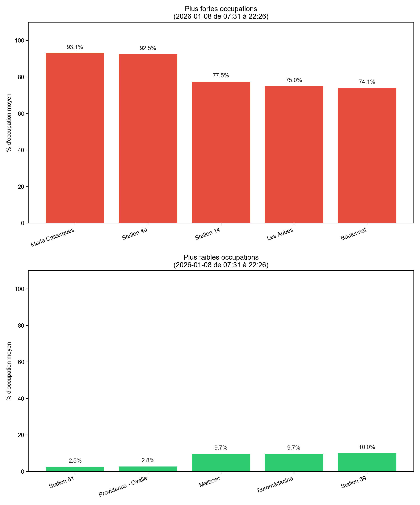
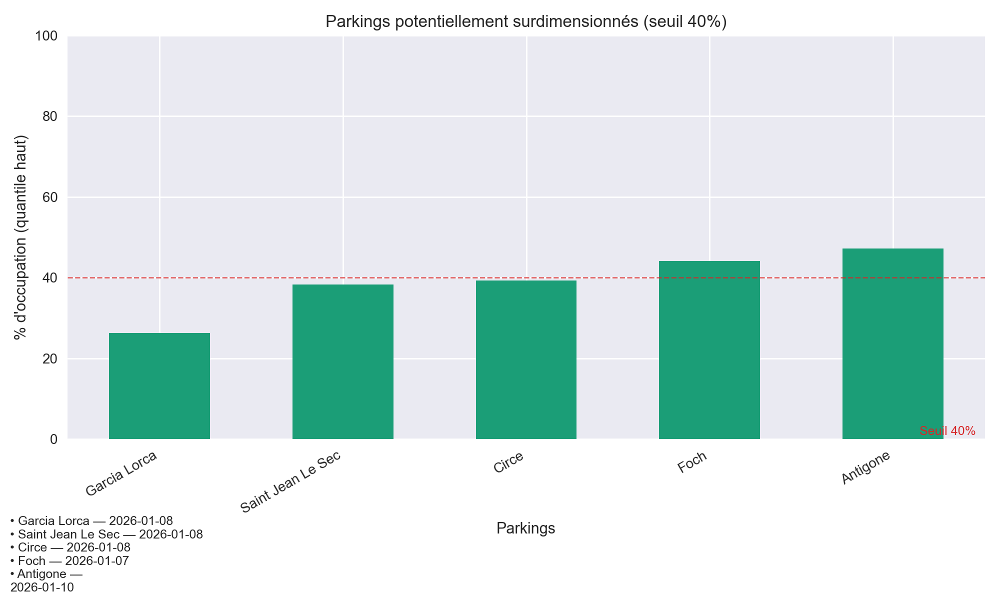
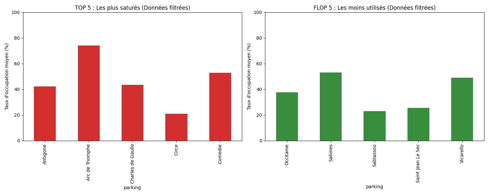
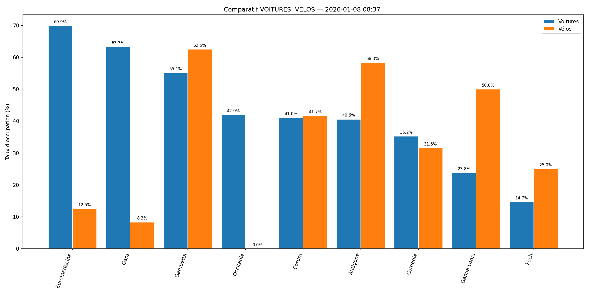

Étude sur l'utilisation des parkings de la ville de Montpellier
Note méthodologique : Pour garantir la fiabilité des analyses, certains parkings présentant des données techniques erronées (capteurs figés ou mesures uniques) ont été exclus de cette étude afin de ne pas fausser les moyennes globales.
1. Comparaison de l'occupation sur deux journées
Ces graphiques représentent le taux moyen d’occupation des parkings de Montpellier sur deux journées différentes : le mercredi 07 janvier et le vendredi 09 janvier.
Analyse du mercredi 07 janvier : Le mercredi après-midi, les enfants n’ont pas école, donc il y a plus de déplacements vers le centre pour les activités, les courses ou les rendez-vous. C’est pour cela que les parkings centraux comme Arc de Triomphe sont presque pleins (89 %).
Analyse du vendredi 09 janvier : Le vendredi, c’est différent : beaucoup de gens travaillent moins ou anticipent le week-end, donc il y a moins de pression sur les parkings du centre. Le parking Arc de Triomphe tombe par exemple à 55 %.
Analyse Globale : En comparant ces deux journées, on observe une nette différence dans le comportement des usagers du centre-ville
Le parking Arc de Triomphe subit une baisse de fréquentation de 34 points entre le mercredi et le vendredi, confirmant l'impact des activités périscolaires du milieu de semaine.
À l'inverse, le parking Euromédecine reste très occupé les deux jours (76 % le mercredi et 78 % le vendredi). Cette stabilité s'explique sûrement par la présence des zones médicales et universitaires dont l'activité est constante toute la semaine.
4. Analyse des parkings vélos

Observation :Sur ce graphique on a le taux d occupation des parking vélo le 6 janvier 2026, le plus en haut rouge et le plus bas en vert.
Ce qui est intéressant, c'est que pour les vélos de la ville, être dans le rouge (donc être
rempli), ce n'est pas forcément une bonne chose. Ça veut dire que personne ne prend ces
vélos et qu'ils restent garés sans bouger. En plus, si vous arrivez avec votre vélo et que la
station est pleine, vous ne pouvez pas le déposer. Vous êtes coincé.
À l'inverse, si une station est dans le vert , elle est vide. Ça veut dire qu'elle marche bien et
que les gens ont pris tous les vélos pour se déplacer, mais le problème c'est qu'il n'y en a
plus pour les suivants.
Le but pour la ville de Montpellier, serait d'avoir des stations qui ne sont ni dans le rouge, ni dans le vert,
pour qu'on puisse toujours trouver un vélo ou une place libre.
2. Analyse de la saturation et du surdimensionnement
Les parking de Montpellier sont ils bien dimensionnées ?
Zones en saturation :
Plusieurs sites dépassent le seuil d'alerte de 90 %. Le Corum à 97.7 %, suivi de l'Arc de Triomphe (95.0 %) et d'Euromedecine (93.3 %).
Ces parkings sont clairement sous-dimensionnés face à la forte demande.

Zones de surdimensionnement :
À l'inverse, certains parkings ne se remplissent jamais, même aux heures de pointe. Le parking Garcia Lorca est le cas le plus flagrant avec seulement 26 % d'occupation maximale.
Saint Jean Le Sec et Circe restent également sous la barre des 40 %.
Analyse Globale : Le réseau n’est pas uniformément bien dimensionné : il existe à la fois des parkings saturés et des parkings largement sous-utilisés.
3. Synthèse de performance : Top vs Flop

Analyse : Ce graphique synthétise la hiérarchie des parkings . Il nous permet de dégager une tendance réelle pour la mairie.
Dans le TOP, on retrouve les parkings de l'écusson, mais aussi Sabines, ce qui prouve que ce parking relais est une réussite stratégique.
En revanche, concernant le FLOP, on retrouve le parking Foch qui fait parti des parking ayant des données erroné, nous ne prenons donc pas en compte ce résultat.
4. Diversité des comportements d'évolution
Tous les parkings n'obéissent pas aux mêmes règles d'évolution. Cette analyse heure par heure du 7 janvier montre des profils très variés.
Synthèse :
Profil Saturation (Arc de Triomphe) : Une occupation haute et constante (>80%).
Profil Pendulaire (Sabines, Occitanie) : Une montée progressive et une chute brutale après 17h.
Profil Stable (Polygone) : Une linéarité remarquable autour de 60%.
Conclusion : La gestion du stationnement à Montpellier doit être différenciée car les besoins varient selon les quartiers.
5. Étude du relais Voiture / Vélo
Monsieur le Maire, nous avons analysé si l'usage des vélos est lié à l'occupation des parkings voitures. Le cas du secteur Comédie est particulièrement révélateur d'un comportement d'intermodalité.
Observation du mercredi 7 janvier (13h25) :
À cette heure de forte affluence, le parking voitures est très rempli (63 %) tandis que la station vélos est totalement vide (0 %). Les usagers semblent avoir délaissé leur voiture pour emprunter l'intégralité des vélos disponibles.

Observation du jeudi 8 janvier (08h37) :
À l'inverse, le matin, le parking voitures est beaucoup moins sollicité (35 %) et la station vélos dispose de nombreuses unités disponibles (32 % d'occupation).
Synthèse :
On observe une relation inverse entre l'occupation des voitures et des vélos à la Comédie. Cela confirme une logique de "Park & Bike" : les usagers arrivent en voiture, stationnent, et saturent immédiatement le parc vélo pour terminer leur trajet.
6. Analyse des zones : Centre-Ville Parkings Relais
Conclusion stratégique :L'analyse comparative révèle deux profils d'utilisation distincts. La zone Centre-Ville (courbe bleue) présente une saturation constante et élevée, caractéristique d'un pôle d'attractivité multifonctionnel (travail, commerces, loisirs). La zone Parkings Relais (courbe orange) affiche une dynamique "pendulaire" marquée par une hausse de l'occupation lors des heures de travail.
Insight stratégique : La faible moyenne globale des parkings relais est accentuée par certains parkings en périphérie qui peinent à capter les usagers. Un renforcement de la signalétique vers ces zones "vides" permettrait de soulager durablement la tension observée sur l'écusson.
7. Conclusion et Recommandations
Cette étude démontre que la mobilité à Montpellier repose sur un équilibre fragile entre infrastructure automobile et mobilité douce. Nos analyses mettent en lumière trois leviers d'action prioritaires pour la municipalité :
Optimisation des flux : Il est nécessaire de mieux signaler les places disponibles dans les parkings relais (souvent sous-utilisés) pour désengorger les points noirs du centre-ville comme le Corum ou l'Arc de Triomphe.
Gestion dynamique des vélos : Le taux d'occupation des vélos révèle un besoin de "rééquilibrage" constant. Une station pleine ou vide est un frein à l'usage ; l'objectif doit être de maintenir une disponibilité hybride (places et vélos) pour garantir la continuité du service.
Fiabilisation de l'Open Data : L'étude a révélé l'importance du nettoyage des données (capteurs défectueux). Une maintenance accrue des capteurs permettrait un pilotage du trafic en temps réel plus précis.
En résumé : Montpellier possède des parkings saturés au centre et des parkings relais qui mériteraient d'être mieux valorisés. De plus on constate que la complémentarité entre la voiture et le vélo est une réalité